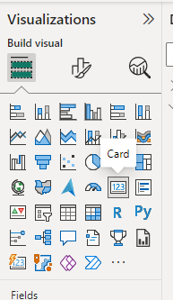

BI for Beginners Session 2
Previous attendees have said…
- 60 previous attendees have left feedback
- 100% would recommend this session to a colleague
- 97% said that this session was pitched correctly
A good introduction to get started with Power BI.
When first presented with the Power BI tool it’s not immediately obvious how to navigate around the product. These sessions were an excellent guide to getting started, demonstrating how to do a lot of basic tasks. After completing the course I felt more confident about undertaking work using Power BI.
thought the session was well run and informative. clear frustration to all around the different IT infrastructure in existence across NHS Scotland, but demonstrated power of Power Query and Power BI. not an expert in field, but just about kept up
Session outline
If you’d like to get a sense of the core content, you might have a look at the video outline for this session:
Visualisation overload!
- we’re going to build several visualisations
- we’ll use some tidied data for this - today is all about using data to do interesting things
- next time, we’ll get into the data wrangling needed to sort that data out
ETL
(as a preview of the next session)
- extract
- transform
- load
Today’s visualisations
- maps
- column charts
- line graphs
- numeric summaries of data
- filtering and slicing tools
The goal
Open BfB_s02.pbix to have a look
Today’s data
- Start a new report in Power BI
- Open
data/s02_data.xlsx - Select the two tables (
gp_sizeandweekend_service) and have a look at the preview - Load those tables
Visualising service use
Finding our data
- Go to the data view
- Open the
weekend_servicetable and inspect the data
Add a line chart
- Go to the report view
- Go to the visualisation pane, and add a line chart
- Expand it to fill the bottom three-quarters of the visualisation area
Add data
- Click the date column in the data pane, and drag the Date Hierarchy to the X-axis field
- Drag the three site columns to the Y-axis field
Add a slicer
- Click off your line graph, then add a slicer
- Drag the year field from the Date Hierarchy into the slicer Field
- Add a second slicer in the same way
- This time, drag the weekend column into the Field
- Select the Format your visual menu
- Format the slicer to use a dropdown
Add some cards
- Add a card
- Drag site_a into the Field
- Use the dropdown on Sum of site_a to select average
- Repeat for site_b and site_c
- Adjust the decimal places via the Callout value section of the format menu
Tidy up the names
- Go round using Rename for this visual to tidy up the names
- Name the page of the report appropriately
End result
GP practice size
Add a map
- Add a new page to your report
- Add a map and expand to fill the left-hand half of the visualisation area
- From the gp_size table, drag the Postcode column to the Location field
- Now drag the ListSize column to the Bubble size field
Format the map
- From the Format visual menu, change the map style to greyscale
- (feel free to play around with the bubble size too)
Colour the bubbles by health board
- Can you find a way of colouring the bubbles by health board?
(add the HBName to the Legend field)
Add a slicer
- Add a slicer for health board
- Use the Format visual options to change this to a dropdown
- Test what happens when you change this
Add a practice details card
- Add a card (new)
- Drag the ListSize and SIMD2020v2 columns to the Fields area
- Make sure that the SIMD2020v2 value is set to Min
- Add a title showing the practice name via the Format Visual options
- Format to suit
Add a column chart
- Add a column chart
- Add the Name on the X-axis, the ListSize on the Y-axis, and the HBName in the legend
Tidy up the names
- Go round using Rename for this visual to tidy up the names
- Name the page of the report appropriately
End result
Homework tasks
- Is there any relationship between practice size and SIMD2020 deprivation scores in the GP data? How could you show that relationship in a visual?
- Is there any month-to-month or seasonal change in the weekend service use data? How could you show that relationship in a visual?